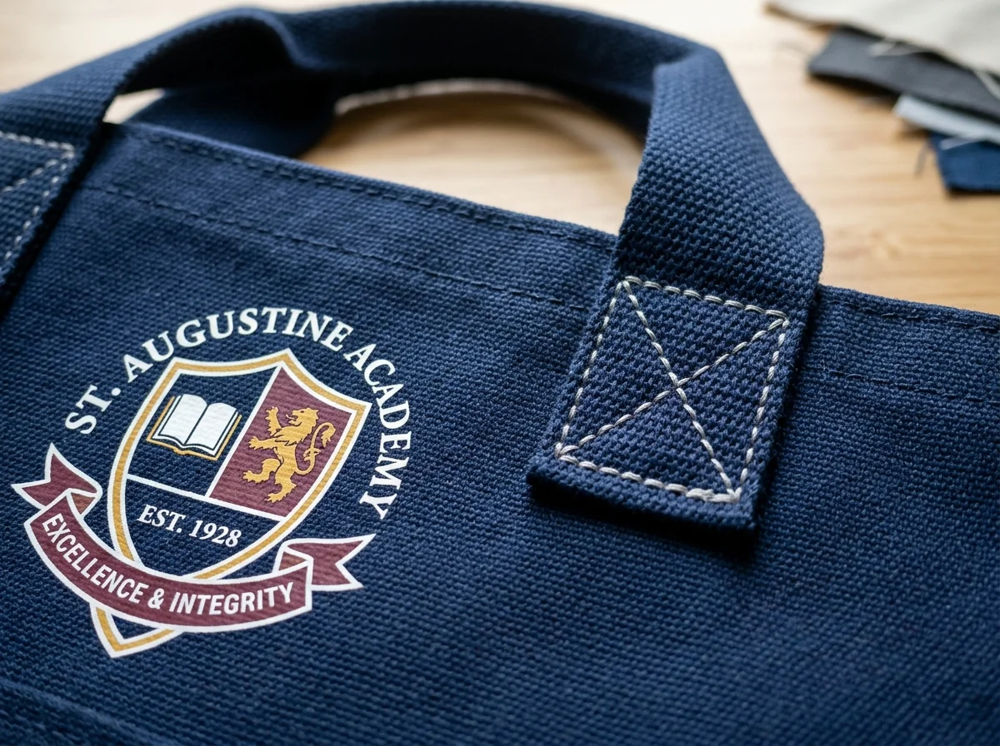

Goodie Bag Sekolah Custom untuk Berbagai Kegiatan Siswa

Goodie bag sekolah custom adalah tas beridentitas sekolah untuk membagikan perlengkapan kegiatan siswa secara rapi, bermanfaat, dan mudah disesuaikan dengan acara.
📌 Ringkasan Inti Panduan:
- Tentukan fungsi tas dari kegiatan dan usia penerima, bukan hanya tampilannya.
- Pilih isi yang aman, berguna, dan dapat dipakai kembali oleh siswa.
- Desain logo serta warna sekolah sebaiknya jelas tanpa memenuhi seluruh permukaan tas.
- Periksa ukuran barang, kekuatan pegangan, sampel fisik, dan jadwal distribusi sebelum memesan.
1. Apa itu goodie bag sekolah custom dan kapan digunakan?
Goodie bag sekolah custom merupakan tas yang disiapkan panitia untuk membawa perlengkapan acara sekaligus menampilkan identitas lembaga pendidikan secara proporsional.
Berbeda dari tas belanja biasa, goodie bag sekolah direncanakan berdasarkan jenis kegiatan dan daftar isi yang akan diterima siswa. Tas ini dapat digunakan dalam lomba antarkelas, pameran karya, pentas seni, kegiatan literasi, perpisahan, penyambutan tamu, atau kegiatan orang tua dan guru. Tidak semua kegiatan membutuhkan paket yang sama. Acara berbasis tugas belajar mungkin lebih terbantu dengan alat tulis, sedangkan acara apresiasi dapat mengutamakan satu cinderamata sederhana.
Fungsi pertama goodie bag adalah wadah yang memudahkan pembagian. Fungsi kedua adalah memberikan identitas yang mudah dikenali. Fungsi ketiga adalah peluang penggunaan lanjutan, misalnya tas dipakai kembali untuk membawa buku kegiatan, bekal, atau perlengkapan les. Karena itu, ukuran, kenyamanan, dan isi harus dievaluasi bersamaan.
Penggunaan istilah 'custom' berarti desain, model, bahan, atau komposisi dapat dikonsultasikan kepada vendor konveksi tas. Tidak berarti seluruh opsi pasti tersedia pada semua jumlah pemesanan. Panitia perlu mengonfirmasi spesifikasi dan minimum order quantity (MOQ) kepada produsen sebelum menetapkan keputusan.
2. Bagaimana memilih paket sesuai jenis kegiatan sekolah?
Paket goodie bag sebaiknya mengikuti aktivitas yang dijalankan siswa, sehingga barang yang diterima relevan dengan acara dan tidak sekadar memenuhi tas.
| Kegiatan | Kebutuhan Utama | Contoh Isi | Catatan Perencanaan |
|---|---|---|---|
| Lomba dan class meeting | Perlengkapan peserta | Buku catatan kecil, pensil, botol minum | Pisahkan paket peserta dan hadiah pemenang |
| Pentas seni | Identitas serta kenang-kenangan | Stiker karya siswa, kartu acara, pouch | Gunakan visual yang mewakili tema pertunjukan |
| Pameran karya siswa | Wadah informasi dan materi karya | Booklet pameran, lembar apresiasi | Pastikan booklet tidak tertekuk |
| Kegiatan literasi | Perlengkapan membaca dan menulis | Pembatas buku, buku catatan, pena | Utamakan manfaat untuk kegiatan membaca berikutnya |
| Perpisahan | Kenang-kenangan sederhana | Kartu pesan, album mini, merchandise | Hindari pembahasan mendalam paket wisuda pada halaman ini |
| Hari tematik sekolah | Barang sesuai aktivitas | Alat gambar atau kit berkebun mini | Periksa kesesuaian usia dan pengawasan guru |
Tabel ini merupakan contoh pengembangan paket, bukan daftar produk atau harga yang dijamin tersedia. Panitia dapat membuat daftar barang wajib dan barang opsional. Daftar tersebut menjadi dasar diskusi dengan vendor, terutama bila jumlah penerima besar.
Untuk ide yang lebih spesifik per acara, lanjutkan ke ide goodie bag kegiatan sekolah. Halaman tersebut membahas cara mengubah tema kegiatan menjadi konsep paket yang relevan tanpa mengulang panduan pemesanan umum.
3. Apa yang berbeda antara goodie bag untuk siswa SD, SMP, dan SMA?
Perbedaan usia memengaruhi keamanan produk, ukuran tas, pilihan aktivitas, serta apakah siswa benar-benar akan menggunakan kembali barang di dalamnya.
Siswa SD
Pilih benda yang mudah digunakan, tidak memiliki bagian kecil yang berisiko untuk anak lebih muda, dan mendukung aktivitas sekolah. Buku gambar, pensil warna sesuai standar keamanan, botol minum, atau pouch alat tulis dapat menjadi contoh. Untuk siswa kelas awal, guru atau orang tua sebaiknya memeriksa kesesuaian produk dengan usia penerima. Hindari menganggap semua siswa SD mempunyai kebutuhan yang seragam.
Siswa SMP
Siswa SMP biasanya memerlukan paket yang tidak terlalu kekanak-kanakan. Buku catatan praktis, pouch serbaguna, atau perlengkapan kegiatan bertema sekolah dapat dipertimbangkan. Desain sebaiknya menghormati selera siswa yang mulai beragam; logo sekolah tetap terbaca tetapi tidak perlu mendominasi seluruh permukaan tas.
Siswa SMA dan SMK
Untuk siswa SMA atau SMK, tas yang bisa dipakai membawa dokumen, materi kegiatan, atau perlengkapan organisasi lebih berguna dibanding barang dekoratif semata. Paket dapat memakai identitas ekstrakurikuler, program keahlian, atau tema acara apabila telah disetujui sekolah. Kebutuhan siswa dalam studi lapangan, pameran karya, dan kegiatan organisasi perlu dibedakan.
Panduan yang lebih terperinci mengenai isi dan kecocokan usia tersedia pada artikel pilihan isi goodie bag sekolah berdasarkan jenjang siswa.
4. Bagaimana memilih ukuran tas tanpa merusak perlengkapan?
Ukuran tas ditentukan dari barang terbesar, ketebalan paket, dan posisi penyimpanan yang diinginkan, bukan dari perkiraan foto katalog saja.
Mulailah dengan mengukur lebar, tinggi, dan tebal seluruh benda. Apabila paket memuat map atau booklet, masukkan contoh fisik untuk melihat apakah sudut dokumen tertekuk. Jika berisi botol atau wadah makan, pertimbangkan alas atau gusset agar benda tidak terlalu menekan sisi tas. Pastikan pegangan tidak terasa terlalu pendek saat tas telah terisi.
Contoh perhitungan sederhana: apabila sebuah booklet memiliki lebar 21 cm dan tinggi 29,7 cm (ukuran A4), dimensi bagian dalam tas harus memberikan ruang lebih dari ukuran tersebut untuk kelonggaran. Nilai akhir bergantung pada orientasi barang, toleransi produksi, jahitan, serta ketebalan isi. Ukuran 30 × 40 cm dapat menjadi salah satu titik awal uji, tetapi tidak otomatis tepat untuk semua paket.
Uji dengan seluruh barang aktual. Pengujian isi dan kenyamanan lebih dapat diandalkan daripada menyebut satu ukuran sebagai standar mutlak.
5. Seperti apa desain goodie bag yang tetap nyaman digunakan setelah acara?
Desain yang efektif menggabungkan identitas sekolah, tema kegiatan, dan bidang visual yang cukup lega agar tas tidak terasa seperti papan pengumuman.
Gunakan logo yang telah disetujui pihak sekolah, nama acara bila relevan, dan satu kombinasi warna utama. Hindari memenuhi tas dengan terlalu banyak teks, nama sponsor, dan ornamen sehingga siswa enggan menggunakannya untuk kegiatan lain. Apabila ada beberapa logo, buat hierarki ukuran dan jarak yang jelas.
Contohnya, pada pameran karya seni, bagian depan dapat menampilkan ilustrasi kecil hasil karya siswa dan identitas sekolah. Pada kegiatan literasi, desain bisa memakai pesan pendek tentang membaca. Pada perpisahan, nama angkatan dapat menjadi aksen tanpa mengorbankan fungsi tas dalam penggunaan harian.

Perhatikan kontras tinta dengan bahan. Mintalah pratinjau yang menunjukkan posisi cetak relatif terhadap pegangan serta jahitan. Logo yang terlalu dekat lipatan dapat terlihat terdistorsi ketika tas terisi. Apabila warna identitas sekolah penting, sampel cetak fisik diperlukan karena hasil pada layar tidak selalu sama dengan bahan sebenarnya.
6. Apa saja pilihan kemasan dan material yang perlu dipertimbangkan?
Material goodie bag sekolah tidak harus paling mahal; pilihan terbaik bergantung pada berat isi, jumlah pemakaian, anggaran, dan kenyamanan siswa.
Tas nonwoven spunbond dapat dipertimbangkan untuk paket ringan dan distribusi massal. Tas kain blacu atau kanvas relevan bila targetnya penggunaan berulang dan citra visual yang lebih natural. Paper bag dapat cocok untuk isi ringan dalam acara dalam ruang, sementara tas beralas lebar perlu diuji jika memuat wadah makan. Kekuatan tas bergantung pada gramatur, konstruksi, jahitan, dan kondisi pemakaian, sehingga nama bahan saja tidak cukup untuk menilai kapasitas.
Jangan mengasumsikan setiap tas berbahan kain otomatis lebih ramah lingkungan. Pertimbangkan intensitas penggunaan ulang, ketahanan aktual, dan cara pembuangan akhir. Pada artikel ini, pembahasan bahan dibatasi pada keputusan praktis; perbandingan teknis panjang tidak perlu diulang dari artikel topik lain.
7. Bagaimana menyiapkan pesanan untuk puluhan hingga ratusan siswa?
Pengadaan yang tertata dimulai dari daftar peserta, jumlah paket, spesifikasi tertulis, persetujuan desain, dan rencana pembagian pada hari kegiatan.
Panitia dapat membuat satu lembar kebutuhan yang mencantumkan nama acara, tanggal dibutuhkan, jumlah siswa, isi paket, ukuran barang terbesar, model tas, file logo, serta kota pengiriman. Selanjutnya, minta vendor mengonfirmasi MOQ, biaya tambahan untuk cetak atau kemasan, sampel, tahapan produksi, dan estimasi tanggal penerimaan. Kesepakatan spesifikasi penting agar penawaran dari beberapa vendor dapat dibandingkan secara adil.
Sisihkan waktu untuk memeriksa sampel, terutama sambungan pegangan dan kejelasan desain. Untuk pesanan banyak, lakukan pengecekan berkala saat pengepakan. Catat jumlah per kelas atau kelompok, lalu tempatkan label pada kemasan luar. Jika paket memiliki beberapa jenis isi, gunakan kode paket agar tidak tertukar.
Rencana operasional lebih rinci, termasuk simulasi anggaran dan distribusi, tersedia pada cara menghitung anggaran dan membagikan goodie bag sekolah.
8. Kesalahan apa yang paling sering terjadi dalam pengadaan goodie bag sekolah?
Kesalahan pengadaan biasanya muncul ketika panitia menentukan desain sebelum mengetahui daftar isi, tenggat, dan jumlah penerima yang sebenarnya.
Pertama, memilih ukuran dari foto tanpa uji isi dapat membuat dokumen terlipat. Kedua, memasukkan terlalu banyak barang kecil membuat biaya meningkat tanpa menambah manfaat yang setara. Ketiga, menempatkan logo sangat besar dan memenuhi permukaan tas dapat mengurangi keinginan siswa memakainya kembali. Keempat, memesan terlalu dekat dengan acara menyisakan sedikit ruang untuk revisi sampel atau pengiriman. Kelima, tidak memisahkan paket per kelas bisa memperlambat distribusi.
Perbaikan utamanya adalah menyiapkan satu contoh paket lengkap sebelum produksi massal disetujui. Dokumentasikan isinya, tampilan depan-belakang, perkiraan bobot, dan kode kelompok. Panitia sebaiknya memakai satu versi daftar kebutuhan yang disepakati bersama.
9. Pertanyaan umum tentang goodie bag sekolah (FAQ)
10. Kesimpulan praktis
Goodie bag sekolah custom yang baik dimulai dari kebutuhan kegiatan siswa. Pilih isi yang berguna, ukuran yang telah diuji, desain identitas yang rapi, serta sistem pengadaan yang terukur. Baca pula contoh konsep berdasarkan acara, panduan isi sesuai usia, dan perencanaan anggaran serta distribusi sebelum meminta penawaran vendor.
Ditulis oleh Tim Redaksi Goodie Bag
Disusun dan dikurasi oleh tim produksi Goodie Bag Malang. Menghadirkan wawasan praktis seputar pemilihan bahan kain, teknik sablon, dan efisiensi pengadaan souvenir tas sejak 2016.
Artikel Terkait Seputar Goodie Bag Sekolah